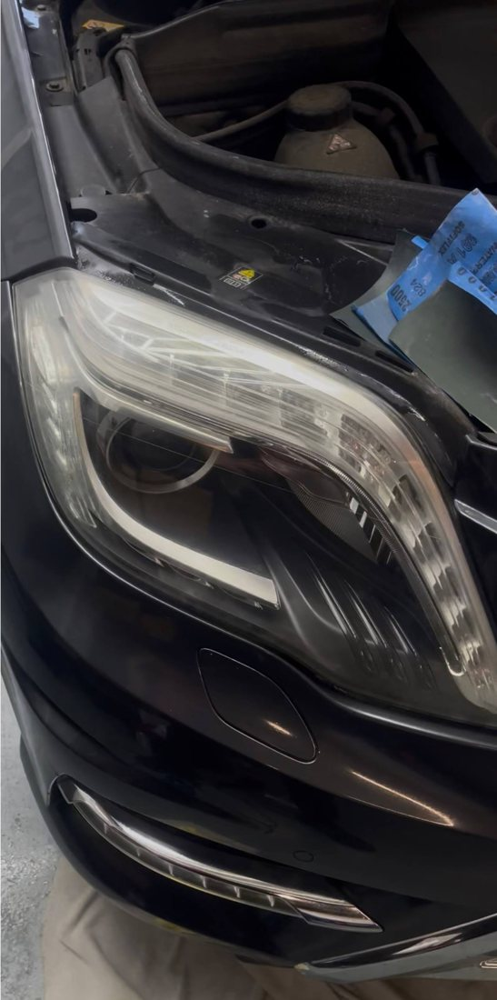
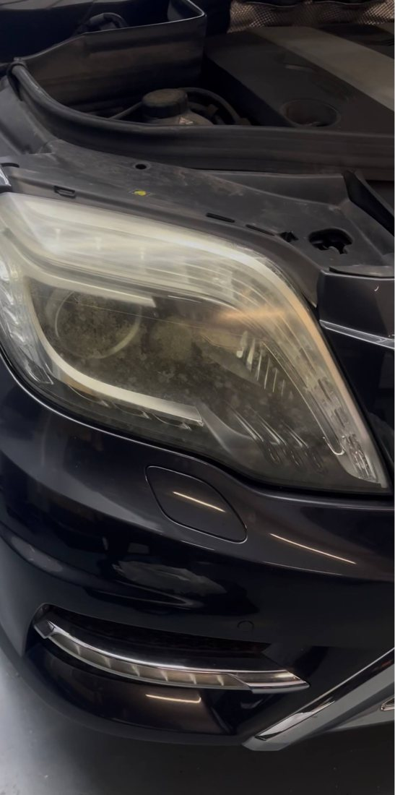
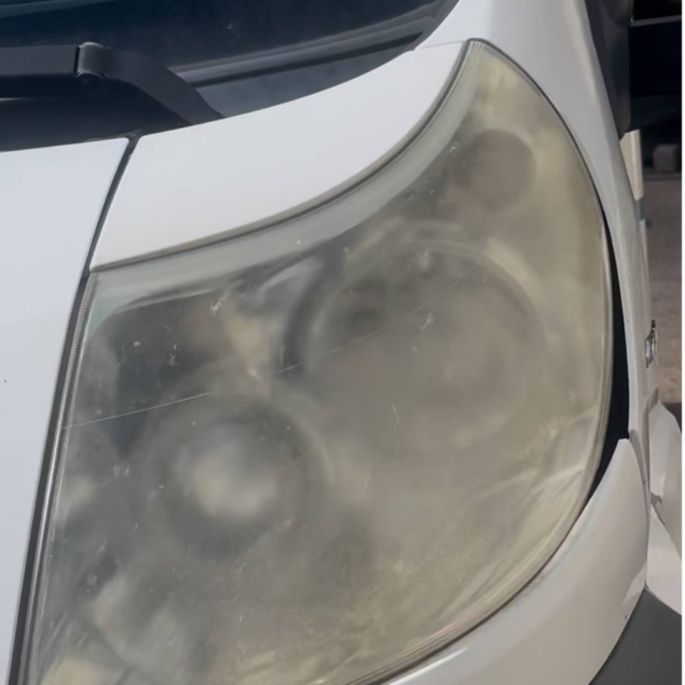
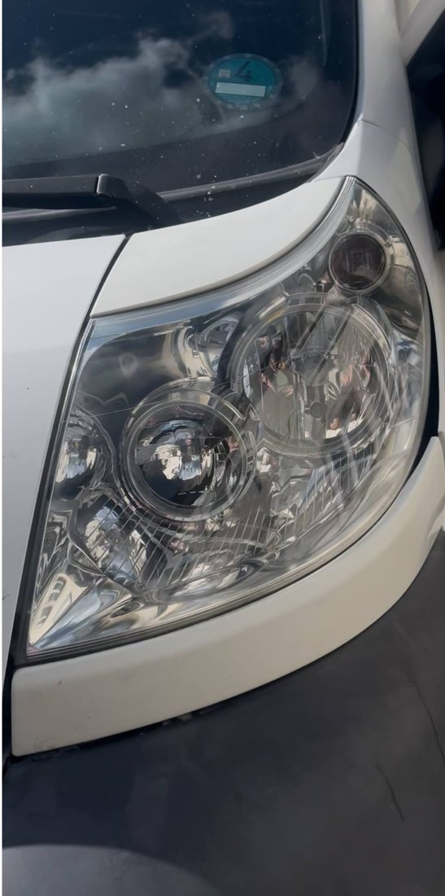

Scheinwerfer
wie neu.
Professionelles Schleifen, Polieren und Versiegeln Ihrer Scheinwerfer – direkt bei Ihnen vor Ort in Stuttgart und Umgebung.

Drei Schritte zu klarer Sicht
Vergilbte, matte oder zerkratzte Scheinwerfer müssen nicht ersetzt werden. Wir bereiten die Außenseite fachgerecht auf.
Schleifen
Schrittweises Nassschleifen entfernt Oxidation, Vergilbung und tiefe Kratzer aus der Kunststoffoberfläche.
Polieren
Mehrstufige Politur bringt die Klarheit zurück – für ein glasklares Ergebnis und bessere Ausleuchtung.
Versiegelung
Die Schutzbeschichtung schützt vor UV-Strahlung, Schmutz und erneuter Vergilbung – dauerhaft sichtbar.
Der Unterschied sieht man sofort
Ziehen Sie den Regler und vergleichen Sie.

VorherNachher

VorherNachherEchte Ergebnisse – ziehen Sie den Regler.
So einfach geht's
Anfrage
Schreiben Sie uns per WhatsApp, gerne mit Foto Ihrer Scheinwerfer.
Termin
Wir vereinbaren Ort und Zeit – wir kommen zu Ihnen.
Aufbereitung
Schleifen, mehrstufiges Polieren und Versiegeln vor Ort.
Klare Sicht
Sie fahren los – mit Scheinwerfern wie neu.
Warum SM Scheinwerfer
Wir kommen zu Ihnen
Kein Werkstatttermin, kein Warten – der Service findet bei Ihnen statt.
Professionelles Equipment
Hochwertige Schleif- und Polierprodukte für ein sauberes Ergebnis.
Sparen statt ersetzen
Eine Aufbereitung kostet nur einen Bruchteil neuer Scheinwerfer.
Stuttgart + 30 km
Wir bedienen Stuttgart und die gesamte Umgebung.
Bereit für klare Sicht?
Schreiben Sie uns kurz per WhatsApp – gerne mit einem Foto Ihrer Scheinwerfer. Wir melden uns schnell mit einem Angebot.
Bitte schreiben Sie uns – wir rufen nicht ungefragt an.